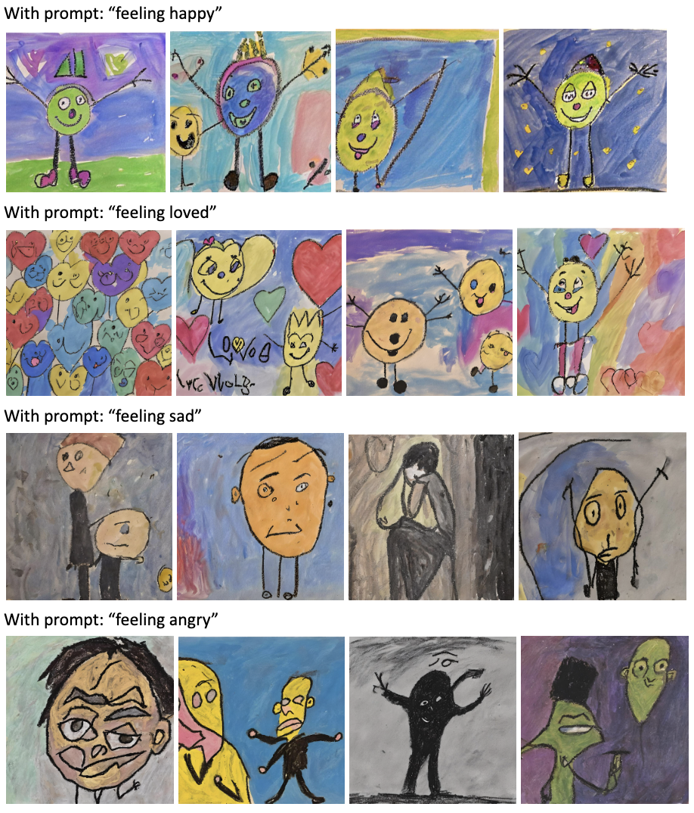

In the evolving landscape of digital art, the balance between complexity and simplicity is pivotal. As we delved into various imaging platforms, one stood out in its sophistication: MidJourney. Its generated images are undeniably realistic, yet they often miss a touch of “naiveness” that can deeply resonate with emotions. The images generated usually lack a texture of simplicity and frankness that arouses emotions. In my process of generating images on Mid-journey, even when I input prompts of abstract artists and styles, the generated photos remain noticeably developed or “complete”. This led to an intriguing exploration: How might we leverage MidJourney to craft images that are “incomplete”, “childish”, and “naive”, aiming to stir the very emotions we seek?
.The CLIP (Contrastive Language-Image Pre-Training) The CLIP (Contrastive Language-Image Pre-Training) model is a deep learning model that has been trained on a large dataset of images and corresponding textual descriptions. Its objective is to learn to associate images and their textual descriptions by embedding them in a shared latent space. This shared space allows for the computation of the similarity between the images and their textual descriptions. CLIP has 3 stages:
- Pre-Training: The model is first pre-trained on a large dataset of image-caption pairs, with the aim of learning a shared representation of images and their textual descriptions. During pre-training, the model learns to predict which textual description corresponds to which image.
- Fine-Tuning: The pre-trained model is then fine-tuned on a specific task such as image classification, object detection, or visual question answering. The model is further fine-tuned on a smaller, task-specific dataset to improve its performance on that particular task.
- Inference: When the model is presented with a new image or text, it computes the embeddings for both and compares their similarity in the shared latent space. The model assigns a higher score to image-text pairs that are semantically similar and a lower score to pairs that are dissimilar.
For different room types, they would produce different room sizes according to the most common/standard commercial room sizes. For example, a bedroom would be 10'x12', a bathroom would be 5'x8', and a kitchen would be around 10'x10'.
The dataset we decided to use is this online gallery of children's paintings on emotions. This is a great source to find naive art, as children's paintings are often naive and are a frank expression of their emotions. We used a web scraper to scrape the images and their corresponding titles and descriptions. We then used the CLIP model to embed the images and their descriptions into a shared latent space. We then used the embeddings to train a GAN model to generate naive art.
And here are the results gerated from the machine learning model!
I was so in love with the resulting artblogs, and I decided to take a further step to animate them!
Feeling Angry
Feeling Sad
Feeling Loved
Feeling Happy
Feeling Grumpy
Feeling Excited